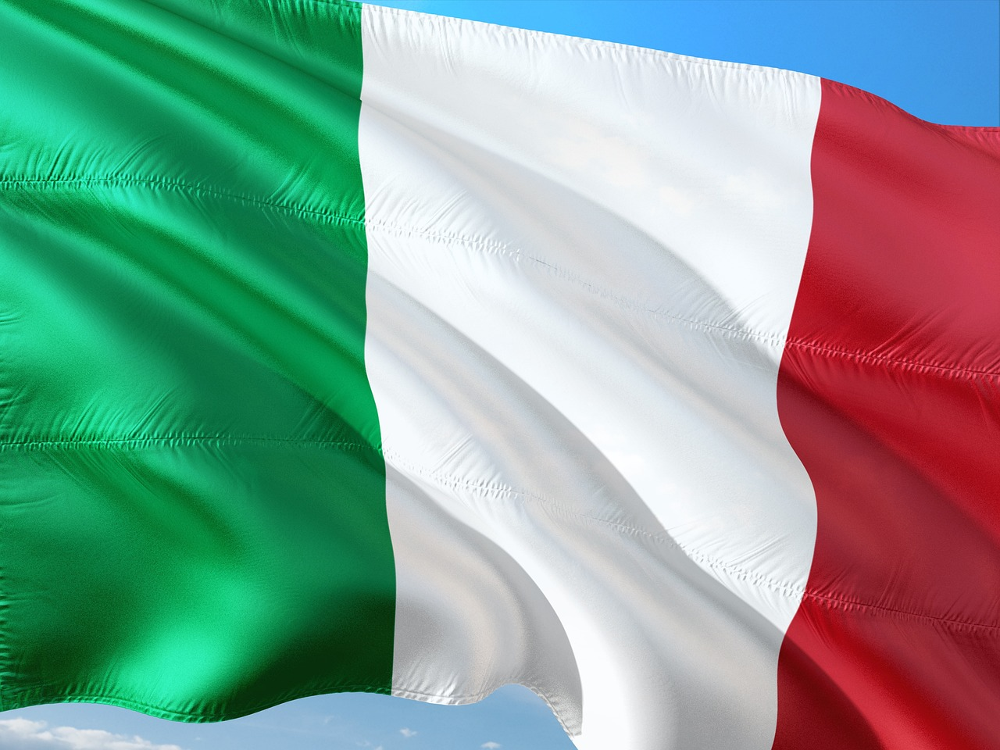
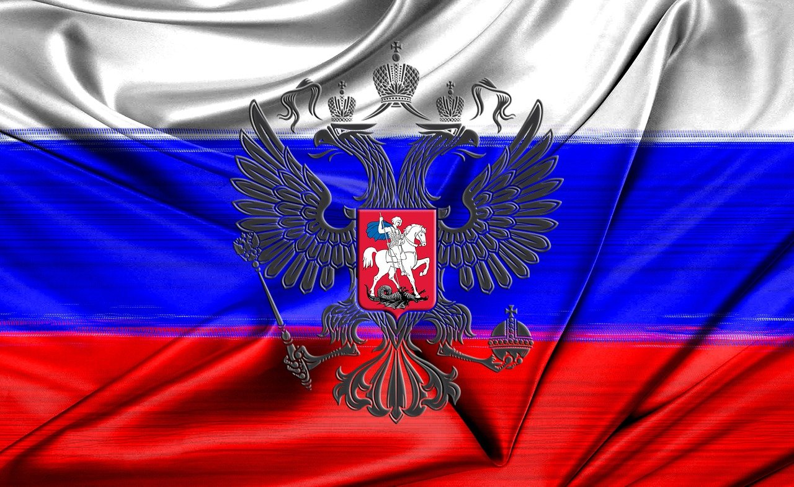
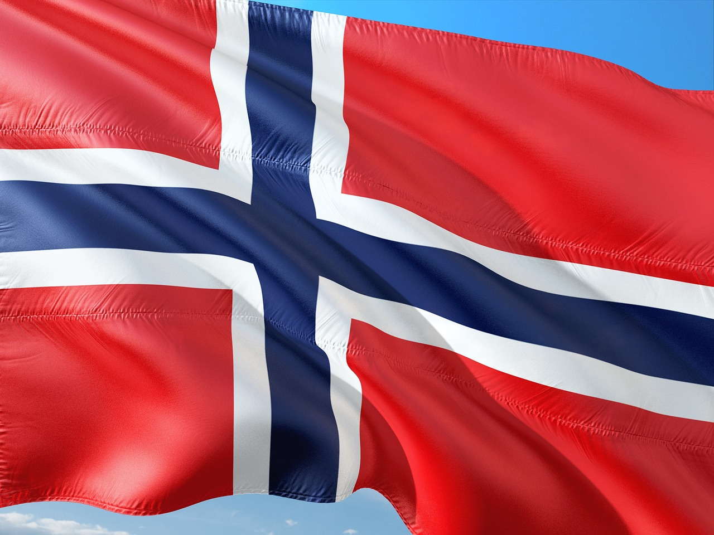
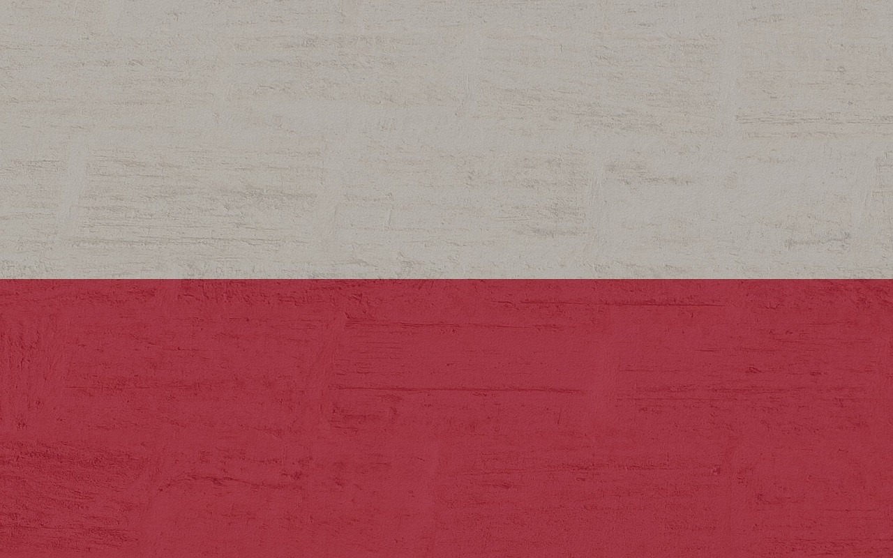
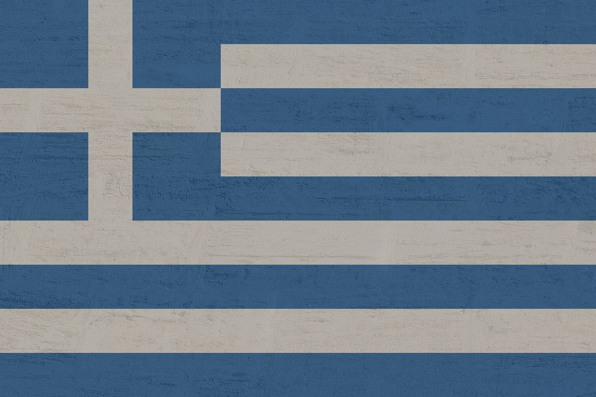
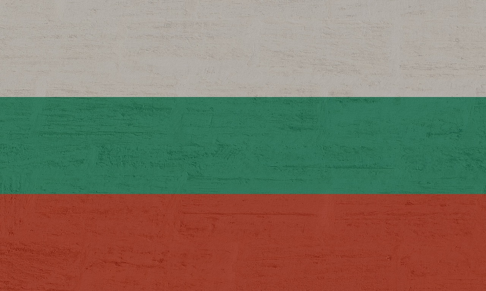

| Ranking | País | Bandeira | Nome | Pontos | Idade |
|---|---|---|---|---|---|
| 1 | Sérvia | Novak Djokovic | 9,960 | 37 | |
| 2 | Itália |  | Jannik Sinner | 8,770 | 22 |
| 3 | Espanha | Carlos Alcaraz | 7,300 | 21 | |
| 4 | Alemanha | Alexander Zverev | 6,305 | 27 | |
| 5 | Rússia |  | Daniil Medvedev | 6,295 | 28 |
| 6 | Rússia | Andrey Rublev | 4,700 | 26 | |
| 7 | Noruega |  | Casper Ruud | 4,425 | 25 |
| 8 | Polônia |  | Hubert Hurkacz | 3,885 | 27 |
| 9 | Grécia |  | Stefanos Tsitsipas | 3,700 | 25 |
| 10 | Bulgária |  | Grigor Dimitrov | 3,555 | 33 |
| *Rankings fornecidos pelo ATP Última atualização: 27 de maio, 2024 | |||||